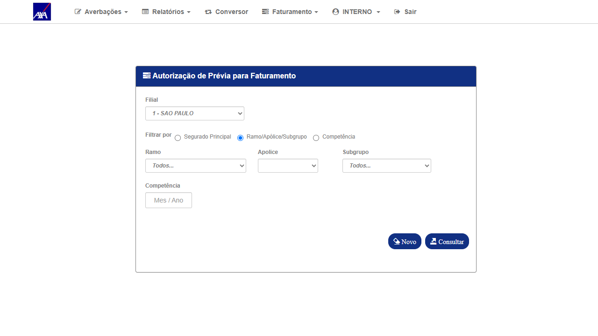
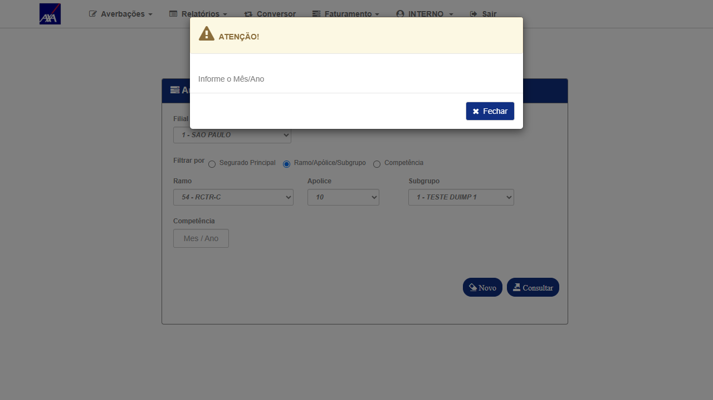
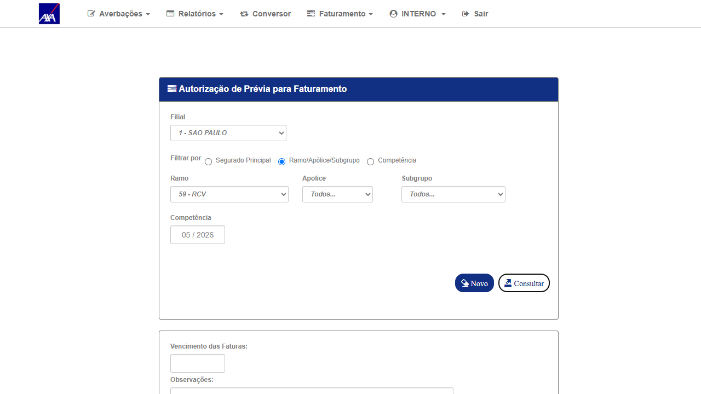

Contexto do Bug
Problema original: Na tela de Aprovação de Prévia (CITNET AXA ALFA, ramo 59 — RCV), o campo "Vencimento das Faturas" (
d_ven_cme) aceitava datas além do limite definido por q_dia_cme (prazo em dias configurado por apólice). Para apólices com Ind_Param_Geral=N e q_dia_cme=25, o sistema deveria rejeitar datas com mais de 25 dias a partir de hoje, mas aprovava sem erro para apólices com Prévia Automática (prevAut="S").
Correção aplicada (Ivan Mauricio — PR 1580 / commit fee8bdef): Adicionada validação AXA-específica em
EfetuarFechamentoPreviaAutomatica() no arquivo FechamentoCitNetNacionalService.cs. Para idSeguradora="AXA" e c_rmo=59, o sistema agora define dataMax = DateTime.Now.AddDays(q_dia_cme) antes de validar a data informada. Datas além desse limite retornam MSG8.
Critério de Aceite: Ao informar "Vencimento das Faturas" com data superior ao limite de
q_dia_cme dias, o sistema deve exibir mensagem de erro (MSG8) e impedir o fechamento. Datas dentro do limite devem ser aceitas normalmente.
Fix — Análise de Código
⚠ Análise de código executada em substituição ao teste end-to-end. HML não possui registros de ramo=59 com
prevAut="S" (Prévia Automática) em nenhuma competência investigada (05/2026 — 634 linhas; 06/2026 — 190 linhas). Sem esta massa, o caminho de código corrigido (EfetuarFechamentoPreviaAutomatica) não é atingível via UI.
Trecho adicionado pelo fix em FechamentoCitNetNacionalService.cs:
// Bloco AXA ramo=59 — adicionado pelo fix (commit fee8bdef / PR 1580)
if (idSeguradora == "AXA" && c_rmo == 59)
{
int prazo = Convert.ToInt16(GenericUtility.VazioOuNulo(apo.Nacional.q_dia_cme, 0));
if (prazo > 0)
{
dataMin = DateTime.Now.AddDays(5).Date;
dataMax = DateTime.Now.AddDays(prazo).Date; // ex: q_dia_cme=25 → dataMax = hoje+25
}
else
{
dataMin = DateTime.Now.AddDays(7).Date;
dataMax = dataRefAtual.AddMonths(2);
}
}
// Validação — dispara ANTES do acesso ao banco (MSG8 se d_ven_cme > dataMax)
if (d_ven_cme > dataMax)
{
avb.msgErro = "A Data do Vencimento deve ser menor que o dia "
+ dataMax.AddDays(1).ToShortDateString() + " (MSG8)";
return listaAvb;
}
| Parâmetro | Antes do fix | Após o fix (PR 1580) |
|---|---|---|
| AXA ramo=59, prevAut="S", q_dia_cme=25 | dataMax = dataRefAtual+2 meses (padrão) — aceita qualquer data | dataMax = hoje+25 dias — rejeita datas além com MSG8 |
| AXA ramo=59, prevAut="S", q_dia_cme=0 | dataMax = dataRefAtual+2 meses | dataMax = dataRefAtual+2 meses (fallback inalterado) |
| Outros ramos / outras seguradoras | Não afetado — bloco é AXA+ramo=59 exclusivo | |
Limitação de Massa HML
Investigação realizada em 19/06/2026:
• Competência 05/2026 / ramo=59 / filial=1: 634 linhas — todas com
• Competência 06/2026 / ramo=59 / filial=1: 190 linhas — todas com
O campo
Sem registros com
• Competência 05/2026 / ramo=59 / filial=1: 634 linhas — todas com
prevAut="N"• Competência 06/2026 / ramo=59 / filial=1: 190 linhas — todas com
prevAut="N"O campo
prevAut é lido da coluna cell[14] da grid e determina qual endpoint chamar:
prevAut="S" → EfetuarFechamentoPreviaAutomatica() (onde o fix foi aplicado);
prevAut="N" → EfetuarFechamento() (sem alteração).Sem registros com
prevAut="S", o caminho corrigido não pode ser exercitado via UI. O reteste end-to-end fica pendente de criação de massa pelo time de desenvolvimento.
Evidências da investigação de massa

01 - Tela aprovação prévia

02 - Grid 05/2026 (todos ramos)

03 - Filtro ramo=59 / 05/2026
Casos de Teste
Conclusão
⚠ Reteste parcial — verificação de código confirmada, execução UI pendente.
• O fix (PR 1580 / commit fee8bdef) está presente e correto no código-fonte em HML, adicionando validação
• A execução end-to-end via UI não foi possível por ausência de massa com
• Recomendação: solicitar ao time de desenvolvimento criação de massa de teste com apólice ramo=59,
• O fix (PR 1580 / commit fee8bdef) está presente e correto no código-fonte em HML, adicionando validação
q_dia_cme para AXA ramo=59 no método EfetuarFechamentoPreviaAutomatica().• A execução end-to-end via UI não foi possível por ausência de massa com
prevAut="S" para ramo=59 nas competências investigadas.• Recomendação: solicitar ao time de desenvolvimento criação de massa de teste com apólice ramo=59,
prevAut="S", q_dia_cme>0 em HML para viabilizar execução dos CTs.